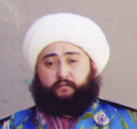
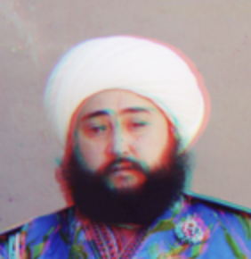

Programming Project #1 (
Programming Project #1 (proj1)
Sergei Mikhailovich Prokudin-Gorskii (1863-1944) [Сергей Михайлович Прокудин-Горский, to his Russian friends] was a man well ahead of his time. Convinced, as early as 1907, that color photography was the wave of the future, he won Tzar's special permission to travel across the vast Russian Empire and take color photographs of everything he saw including the only color portrait of Leo Tolstoy. And he really photographed everything: people, buildings, landscapes, railroads, bridges... thousands of color pictures! His idea was simple: record three exposures of every scene onto a glass plate using a red, a green, and a blue filter. Never mind that there was no way to print color photographs until much later -- he envisioned special projectors to be installed in "multimedia" classrooms all across Russia where the children would be able to learn about their vast country. Alas, his plans never materialized: he left Russia in 1918, right after the revolution, never to return again. Luckily, his RGB glass plate negatives, capturing the last years of the Russian Empire, survived and were purchased in 1948 by the Library of Congress. The LoC has recently digitized the negatives and made them available on-line.
The goal of this assignment is to take the digitized Prokudin-Gorskii glass plate images and, using image processing techniques, automatically produce a color image with as few visual artifacts as possible. In order to do this, you will need to extract the three color channel images, place them on top of each other, and align them so that they form a single RGB color image. This is a cool explanation on how the Library of Congress composed their color images.
Some starter code is available in
Python; do not feel
obligated
to use it.
We will assume that a simple x,y translation model is sufficient for
proper alignment. However, the full-size glass plate images (i.e. .tif files) are very
large, so your alignment procedure will need to be relatively fast and
efficient.
When you begin your naive implementation, you should start with the smaller files
monastery.jpg and cathedral.jpg provided, or by downsizing the larger files.
Your submission should be ran on the full-size images.

A few of the digitized glass plate images (both hi-res and low-res versions) will be placed in the following zip file (note that the filter order from top to bottom is BGR, not RGB!): data.zip (online gallery for preview). Your program will take a glass plate image as input and produce a single color image as output. The program should divide the image into three equal parts and align the second and the third parts (e.x. G and R) to the first (B). For each image, you will need to print the (x,y) displacement vector that was used to align the parts.
The easiest way to align the parts is to exhaustively search over a window
of possible displacements (say [-15,15] pixels), score each one using some
image matching metric, and take the displacement with the best score.
There is a number of possible metrics that one could use to score how well
the images match. The simplest one is just the L2 norm also known as the
Euclidean Distance which is simply
sqrt(sum(sum((image1-image2).^2))) where the sum is taken over the
pixel values. Another is Normalized Cross-Correlation (NCC), which is
simply a dot product between two normalized vectors: (image1./||image1||
and image2./||image2||).
Note that in the case like the Emir of
Bukhara (show on right), the images to be matched do not actually have the
same brightness values (they are different color channels), so you might
have to use a cleverer metric, or different features than the raw pixels.
Exhaustive search will become prohibitively expensive if the pixel displacement is too large (which will be the case for high-resolution glass plate scans). In this case, you will need to implement a faster search procedure such as an image pyramid. An image pyramid represents the image at multiple scales (usually scaled by a factor of 2) and the processing is done sequentially starting from the coarsest scale (smallest image) and going down the pyramid, updating your estimate as you go. It is very easy to implement by adding recursive calls to your original single-scale implementation. You should implement the pyramid functionality yourself using appropriate downsampling techniques.
Your job will be to implement an algorithm that, given a 3-channel image,
produces a color image as output. Implement a simple single-scale version
first, using for loops, searching over a user-specified window of
displacements. The above directory has skeleton Python code that
will help you get started and you should pick one of the smaller .jpg
images in the directory to test this version of the code. Next, add a
coarse-to-fine pyramid speedup to handle large images like the .tif ones
provided in the directory.
Although the color images resulting from this automatic procedure will often look strikingly real, they are still a far cry from the manually restored versions available on the LoC website and from other professional photographers. Of course, each such photograph takes days of painstaking Photoshop work, adjusting the color levels, removing the blemishes, adding contrast, etc. Can we make some of these adjustments automatically, without the human in the loop?
Bells and whistles that CS280A students need to implement, but CS180 students are welcome to do for a bragging right. You can use any libraries to solve bells and whistles as long as you can explain what it is doing and why you used it.
(Optional) Feel free to come up with your own approaches. There is no right answer here -- just try out things and see what works. For example, the borders of the photograph will have strange colors since the three channels won't exactly align. See if you can devise an automatic way of cropping the border to get rid of the bad stuff. One possible idea is that the information in the good parts of the image generally agrees across the color channels, whereas at borders it does not.
For this project, you must submit both your code and a project webpage as described here.
The project webpage is your presentation of your work. Imagine that you are writing a blog post about your project for your friends. A good blog post is easy to read and follow, well organized, and visually appealing.
When you introduce new concepts or tricks that improve your results, explain them along the way and show the improved results of your algorithm on example images.
Below are the specific deliverables to keep in mind when writing your project webpage.
Important: Images are for the project webpage only. Do not upload image files (e.g., .jpg, .png, .tif) to Gradescope. This keeps submissions small and avoids hitting Gradescope's 100 MB upload limit, which large image sets can easily exceed.
np.roll.This assignment will be graded out of 100 points, as follows:
For results:
For presentation:
For results:
For presentation:
Required items (CS280A) — 6 points each:
For results (per item):
For presentation (per item):
Q: What’s considered a good alignment vs. a bad alignment?
Since one failure is allowed while still receiving full credit for alignment, aim for strong results on most images (with a few failures) rather than acceptable-but-mediocre results on all images.
| Okay | Not Okay |
|---|---|
|
 |
 |
Q: What if I used a better distance function beyond L2 and NCC to get better alignments?
That’s great and encouraged. However, to receive full credit you must still document results using the basic distance functions (L2/NCC). If you skip this, your presentation score will be penalized.